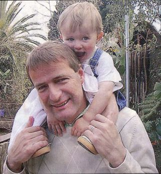

Nico Henning (*1966)
Voorgeslagte
|
Nageslagte
|
Foto(s)
Genealogiese no.
a4.b5.c2.d4.e2.f3.
Voorname
Nico
Van
Henning
Geslag
Manlik
Vader
Cornelius Almero Oosthuizen Henning
Moeder
Anita Margaretha Van Tonder
# ste kind van vader
3
Noemnaam
Nico
Geboortedatum
1966-11-11
Geboorteplek
Johannesburg
Doopdatum
Doopplek
Sterfdatum
Sterfplek
Huwelike
No.
Naam
Datum
Plek
Nota
1
Marie? (Onbekend)
2
Chanelle Nerine Saincic
2006
sterf 2011
Kinders
No.
Naam
Geslag
Ander ouer
Geboortedatum
Sterfdatum
1
Benjamin Henning
Manlik
Chanelle Nerine Saincic
2007
Voorgeslagte van Nico Henning (*1966)
Generasies
2
3
4
5
6
/¯¯
Johan Wilhelm Henning
/¯¯
Izaak Schalk Henning (*1818)
\__
Hester Cecilia Van Der Merwe (*1794, †1870)
/¯¯
Petrus Abel Johannes Henning (*1849, †1931)
\__
Hester Maria Jacoba Louw (*1828)
/¯¯
Izaak Schalk Henning (*1888, †1956)
\__
Anna Catharina Johanna Strauss (*1861, †1896)
/¯¯
Cornelius Almero Oosthuizen Henning (*1938, †1994)
\__
Susanna Magdalena Oosthuizen (*1906, †1953)
Nico Henning (*1966)
\__
Anita Margaretha Van Tonder (*1936)
Nageslagte van Nico Henning (*1966)
Nico Henning (*1966)
a4.b5.c2.d4.e2.f3.
Benjamin Henning (*2007)
a4.b5.c2.d4.e2.f3.g1.
Fotos

I002. a3.b5.c2.d4.e2.f3. Nico Henning *11-11-1966 en sy seuntjie Benjamin
Beskou lys van mense op foto
Benjamin Henning
Nico Henning